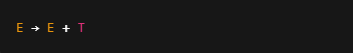
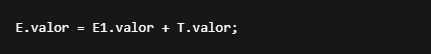

1.4 Pila semántica de un analisador sintáctico
La pila semántica es una estructura de datos auxiliar que se utiliza durante el análisis sintáctico
(normalmente descendente o ascendente) para gestionar y aplicar acciones semánticas asociadas a las
producciones de una gramática.
¿Para qué sirve?
- Almacena información semántica (por ejemplo: tipos, valores, atributos, referencias a símbolos).
- Ayuda a construir árboles de sintaxis abstracta (AST).
- Se utiliza en conjunto con la tabla de símbolos y el árbol sintáctico para realizar el análisis semántico.
- Sirve para evaluar expresiones, generar código intermedio, o verificar tipos, entre otras tareas.
¿Cómo se usa?
Cuando el analizador sintáctico (como un parser LR o LL) reduce una producción de la gramática, se ejecuta una
acción semántica asociada.
Ejemplo:
Supongamos una gramática con la producción:

Cuando el parser reduce usando esa producción, se realiza una acción semántica como:

Para ello:
- Los valores E1.valor y T.valor ya están en la pila semántica.
- Se extraen de la pila (pop).
- Se realiza la operación +.
- El resultado se vuelve a insertar (push) en la pila.
Contenido típico de la pila semántica
- El tipo del símbolo (int, float, bool, etc.)
- El valor (literal)
- El nombre del identificador
- Referencia a un nodo del AST
- Dirección de memoria (para generación de código)
← Volver al índice